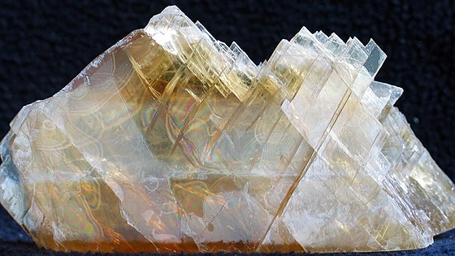
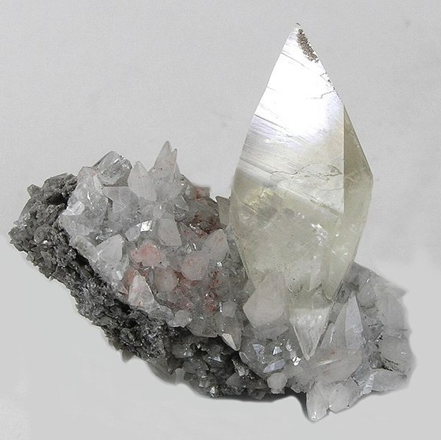
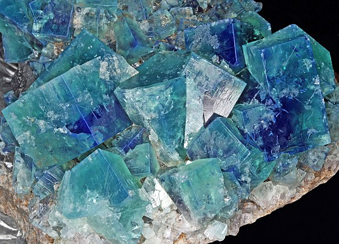
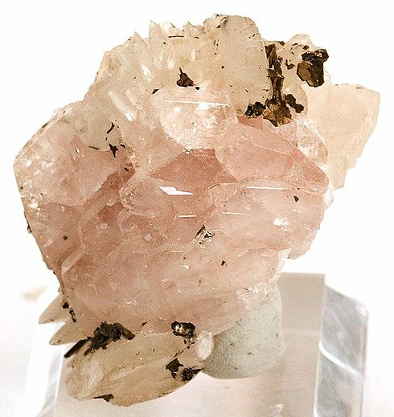
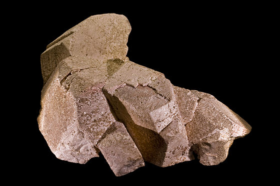
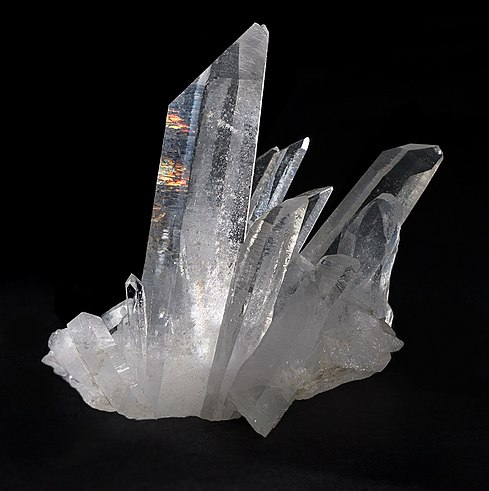
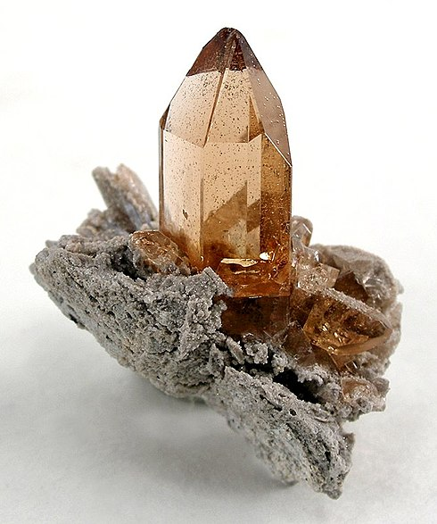
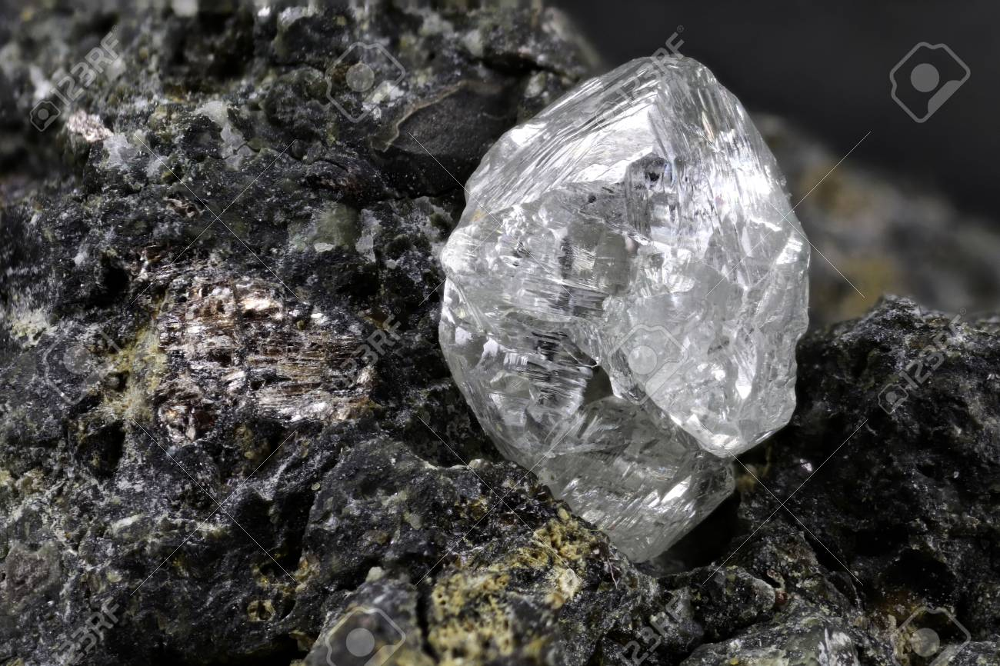

Tabla de dureza de Mosh
|
| Dureza |
Mineral |
Se raya con / raya a |
Composición química |
Foto |
|
1 |
Talco |
Se puede rayar facilmente con la uña |
Mg3Si4O10(OH)2 |
 |
|
2 |
Yeso |
Se puede rayar con la uña con más dificultad |
CaSO4·2H2O |
 |
|
3 |
Calcita |
Se puede rayar con una moneda de cobre |
CaCO3 |
 |
|
4 |
Fluorita |
Se puede rayar con un cuchillo de acero |
CaF2 |
 |
|
5 |
Apatito |
Se puede rayar difícilmente con un cuchillo |
Ca5(PO4)3(OH-,Cl-,F-)l |
 |
|
6 |
Ortosa |
Se puede rayar con una lija para el acero |
KAlSi3O8 |
 |
|
7 |
Cuarzo |
Raya el vidrio |
SiO2 |
 |
|
8 |
Topacio |
Rayado por herramientas de carburo de wolframio |
Al2SiO4(OH-,F-)2 |
 |
|
9 |
Corindón |
Rayado por herramientas de carburo de silicio |
Al2O3 |
 |
|
10 |
Diamante |
El material más duro en esta escala (rayado por otro diamante). |
C |
 |